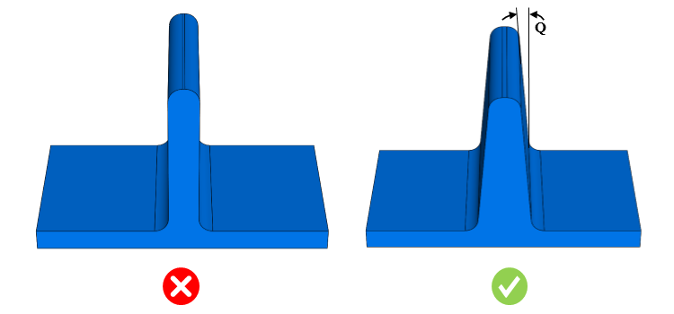

リブの抜き勾配角度は、ユーザーが指定した範囲内である必要があります。
射出成形部品のリブには、金型から部品を取り外しやすくするために、抜き勾配またはテーパを設けることが非常に望まれます。理想的な抜き勾配角度は、金型内での部品の深さや、最終用途で求められる機能によって異なります。抜き勾配角度は、引き抜き方向に沿ってリブの両側壁に適用する必要があります。
一般的な目安として、リブには片側あたり 0.5° 〜 1.5° の抜き勾配を設けることが推奨されます。
リブの最小抜き勾配は 0.5 度以上（>= 0.5 度）である必要があります。

ここでは、
Q = リブの抜き勾配角度